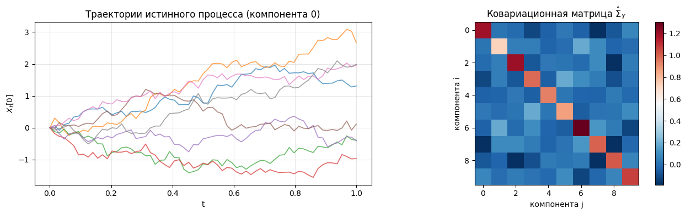
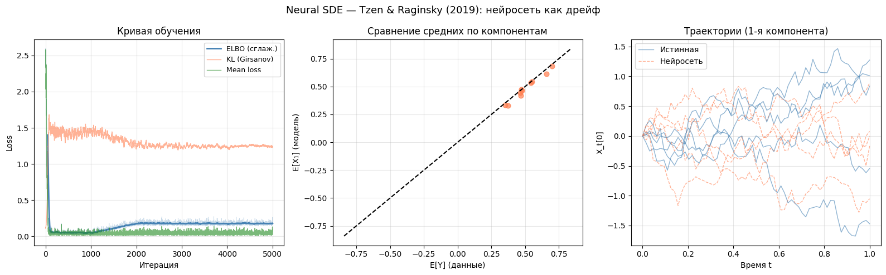

Neural SDE — Tzen & Raginsky (2019), Section 6#
Истинная модель: $\(dX_t = \sigma(A_{\text{true}} X_t)\, dt + dW_t, \quad X_0 = 0, \quad t \in [0, T]\)$
\(X_t \in \mathbb{R}^{10}\) — состояние процесса
\(A_\text{true} \in \mathbb{R}^{10 \times 10}\) — случайная матрица
Наблюдения: \(Y = X_1 + \varepsilon\), где \(\varepsilon \sim N(0,\, 0.01 \cdot I)\)
Размер выборки: \(N = 1000\), шагов: \(N_\text{steps} = 32\), \(\Delta t = 1/32\)
Вариационная (выученная) модель: $\(dX_t = f_\theta(X_t, t)\, dt + dW_t\)$
где \(f_\theta\) — нейросеть. Задача: выучить \(f_\theta\) из наблюдений \(Y = X_T + \varepsilon\).
Подход (Section 5.2): дискретизация методом Эйлера–Маруямы + backprop через граф.
Loss = moment matching + KL (по теореме Гирсанова, KL между вариационным процессом и винеровским процессом равен \(\frac{1}{2}\int_0^T \|f_\theta(X_t)\|^2\, dt\)).
import torch
import torch.nn as nn
import numpy as np
import matplotlib.pyplot as plt
from tqdm import tqdm
D = 10 # размерность пространства состояний
N_STEPS = 64 # шагов Эйлера (h = T/N_STEPS)
T = 1.0 # горизонт времени
DT = T / N_STEPS
SQRT_DT = DT ** 0.5
N_DATA = 1000 # число наблюдений
N_ITER = 5000 # итераций обучения
LR = 1e-3
M_SAMPLES = 256 # Монте-Карло сэмплы для оценки моментов и KL
OBS_STD = 0.1 # стандартное отклонение шума наблюдений
DEVICE = torch.device('cuda' if torch.cuda.is_available() else 'cpu')
print(f"Device: {DEVICE}")
Device: cpu
torch.manual_seed(42)
A_true = torch.randn(D, D, device=DEVICE) # истинная матрица
def gen_data(A, n_samples):
"""
Симулируем истинный процесс: dX_t = sigmoid(A·X_t) dt + dW_t
Наблюдение: Y = X_T + ε, ε ~ N(0, OBS_STD²·I)
"""
X = torch.zeros(n_samples, D, device=DEVICE)
with torch.no_grad():
for _ in range(N_STEPS):
X = X + torch.sigmoid(X @ A.T) * DT + SQRT_DT * torch.randn_like(X)
return X + OBS_STD * torch.randn_like(X)
Y_data = gen_data(A_true, N_DATA)
print(f"Сгенерировано {N_DATA} наблюдений размерности {D}")
Сгенерировано 1000 наблюдений размерности 10
Y_mean = Y_data.mean(dim=0).detach() # (D,)
Y_cov = (Y_data - Y_mean).T @ (Y_data - Y_mean) / (N_DATA - 1) # (D, D)
Y_cov = Y_cov.detach()
print(f"‖E[Y]‖ = {Y_mean.norm().item():.3f}")
print(f"tr(Cov) = {Y_cov.trace().item():.3f}")
‖E[Y]‖ = 1.633
tr(Cov) = 10.300
# Визуализация траекторий
t_vals = np.linspace(0, T, N_STEPS + 1)
fig, axes = plt.subplots(1, 2, figsize=(13, 4))
for i in range(8):
X = torch.zeros(1, D, device=DEVICE)
traj = [X[0, 0].item()]
with torch.no_grad():
for _ in range(N_STEPS):
X = X + torch.sigmoid(X @ A_true.T) * DT + SQRT_DT * torch.randn_like(X)
traj.append(X[0, 0].item())
axes[0].plot(t_vals, traj, alpha=0.7, lw=1.2)
axes[0].set_title("Траектории истинного процесса (компонента 0)")
axes[0].set_xlabel("t")
axes[0].set_ylabel("$X_t[0]$")
axes[0].grid(True, alpha=0.3)
axes[1].imshow(Y_cov.cpu().numpy(), cmap='RdBu_r')
axes[1].set_title("Ковариационная матрица $\hat\Sigma_Y$")
axes[1].set_xlabel("компонента j")
axes[1].set_ylabel("компонента i")
plt.colorbar(axes[1].images[0], ax=axes[1])
plt.tight_layout()
plt.show()
<>:20: SyntaxWarning: invalid escape sequence '\h'
<>:20: SyntaxWarning: invalid escape sequence '\h'
/tmp/ipykernel_18499/1284578434.py:20: SyntaxWarning: invalid escape sequence '\h'
axes[1].set_title("Ковариационная матрица $\hat\Sigma_Y$")

Модель: дрейф как нейросеть#
Параметризуем дрейф \(f_\theta : \mathbb{R}^D \to \mathbb{R}^D\) двухслойной сетью.
Это аналог вариационного приближения к апостериорному процессу (Раздел 4 статьи):
drift_net = nn.Sequential(
nn.Linear(D, 64),
nn.Tanh(),
nn.Linear(64, 64),
nn.Tanh(),
nn.Linear(64, D),
).to(DEVICE)
total_params = sum(p.numel() for p in drift_net.parameters())
print(f"Параметров в drift_net: {total_params}")
Параметров в drift_net: 5514
Симуляция и KL-дивергенция#
По теореме Гирсанова (Section 4), KL между вариационным процессом \(q_\theta\) и априорным процессом Винера \(p\) равен:
Аппроксимируем методом Эйлера:
def simulate_with_kl(net, n_samples):
"""
Euler для вариационного процесса.
Возвращает X_T и оценку KL(q_theta || Wiener).
"""
X = torch.zeros(n_samples, D, device=DEVICE)
kl_acc = torch.zeros(1, device=DEVICE)
for _ in range(N_STEPS):
drift = net(X) # (n, D)
kl_acc = kl_acc + (drift ** 2).sum(dim=-1).mean() * DT * 0.5
X = X + drift * DT + SQRT_DT * torch.randn_like(X)
return X, kl_acc
Функция потерь (ELBO)#
ELBO для Neural SDE (Section 4, уравнение (11)):
Reconstruction loss при гауссовских наблюдениях \(Y \sim N(X_T, \sigma^2 I)\):
Используем момент-матчинг как суррогат reconstruction loss — это стабильнее для высокой размерности.
def compute_loss(net, Y_mean, Y_cov, beta_kl=0.01):
X1, kl = simulate_with_kl(net, M_SAMPLES) # X1: (M, D), kl: scalar
# Моменты модели
X1_mean = X1.mean(dim=0) # (D,)
X1_c = X1 - X1_mean
X1_cov = X1_c.T @ X1_c / (M_SAMPLES - 1) # (D, D)
# Целевая ковариация модели (вычитаем шум наблюдения)
target_cov = Y_cov - OBS_STD**2 * torch.eye(D, device=DEVICE)
mean_loss = ((X1_mean - Y_mean) ** 2).sum()
cov_loss = ((X1_cov - target_cov) ** 2).sum()
# ELBO = reconstruction (moment matching) + beta * KL
# beta_kl маленький в начале — даём сети сначала выучить моменты
loss = mean_loss + 0.01 * cov_loss + beta_kl * kl
return loss, mean_loss.item(), cov_loss.item(), kl.item()
optimizer = torch.optim.Adam(drift_net.parameters(), lr=3e-4)
scheduler = torch.optim.lr_scheduler.CosineAnnealingLR(optimizer, T_max=N_ITER, eta_min=1e-5)
losses, kl_hist, mean_hist = [], [], []
pbar = tqdm(range(1, N_ITER + 1))
for iteration in pbar:
# KL warmup: первые 1000 итераций beta_kl = 0, потом линейно растёт до 0.1
beta_kl = min(0.1, max(0.0, (iteration - 1000) / 1000 * 0.1))
optimizer.zero_grad()
loss, ml, cl, kl = compute_loss(drift_net, Y_mean, Y_cov, beta_kl=beta_kl)
loss.backward()
torch.nn.utils.clip_grad_norm_(drift_net.parameters(), max_norm=5.0)
optimizer.step()
scheduler.step()
losses.append(loss.item())
kl_hist.append(kl)
mean_hist.append(ml)
if iteration % 500 == 0 or iteration == 1:
pbar.set_postfix({
'loss': f'{loss.item():.4f}',
'mean_loss': f'{ml:.4f}',
'kl': f'{kl:.4f}',
'beta_kl': f'{beta_kl:.3f}',
})
print(f"Финальный loss: {losses[-1]:.6f}")
100%|██████████| 5000/5000 [05:50<00:00, 14.25it/s, loss=0.1624, mean_loss=0.0301, kl=1.2354, beta_kl=0.100]
Финальный loss: 0.162373
Визуализация результатов#
fig, axes = plt.subplots(1, 3, figsize=(16, 5))
fig.suptitle('Neural SDE — Tzen & Raginsky (2019): нейросеть как дрейф', fontsize=13)
# --- График 1: Loss ---
w = 50
axes[0].plot(losses, color='steelblue', lw=0.5, alpha=0.3)
if len(losses) > w:
sm = np.convolve(losses, np.ones(w)/w, mode='valid')
axes[0].plot(range(w-1, len(losses)), sm, color='steelblue', lw=2, label='ELBO (сглаж.)')
axes[0].plot(kl_hist, color='coral', lw=1, alpha=0.6, label='KL (Girsanov)')
axes[0].plot(mean_hist, color='forestgreen', lw=1, alpha=0.6, label='Mean loss')
axes[0].set_xlabel('Итерация')
axes[0].set_ylabel('Loss')
axes[0].set_title('Кривая обучения')
axes[0].legend(fontsize=9)
axes[0].grid(True, alpha=0.3)
# --- График 2: Сравнение моментов ---
with torch.no_grad():
X1_model, _ = simulate_with_kl(drift_net, 2000)
X1_mean_np = X1_model.mean(dim=0).cpu().numpy()
Y_mean_np = Y_mean.cpu().numpy()
axes[1].scatter(Y_mean_np, X1_mean_np, alpha=0.7, color='coral', s=40)
lim = max(abs(Y_mean_np).max(), abs(X1_mean_np).max()) * 1.2
axes[1].plot([-lim, lim], [-lim, lim], 'k--', lw=1.5)
axes[1].set_xlabel('E[Y] (данные)')
axes[1].set_ylabel('E[X₁] (модель)')
axes[1].set_title('Сравнение средних по компонентам')
axes[1].grid(True, alpha=0.3)
# --- График 3: Траектории ---
t_vals = np.linspace(0, T, N_STEPS + 1)
with torch.no_grad():
for i in range(5):
# Истинная
X = torch.zeros(1, D, device=DEVICE)
traj_true = [X[0, 0].item()]
for _ in range(N_STEPS):
X = X + torch.sigmoid(X @ A_true.T) * DT + SQRT_DT * torch.randn_like(X)
traj_true.append(X[0, 0].item())
axes[2].plot(t_vals, traj_true, color='steelblue', alpha=0.6, lw=1,
label='Истинная' if i == 0 else '')
# Выученная
X = torch.zeros(1, D, device=DEVICE)
traj_net = [X[0, 0].item()]
for _ in range(N_STEPS):
X = X + drift_net(X) * DT + SQRT_DT * torch.randn_like(X)
traj_net.append(X[0, 0].item())
axes[2].plot(t_vals, traj_net, color='coral', alpha=0.6, lw=1,
linestyle='--', label='Нейросеть' if i == 0 else '')
axes[2].set_xlabel('Время t')
axes[2].set_ylabel('X_t[0]')
axes[2].set_title('Траектории (1-я компонента)')
axes[2].legend()
axes[2].grid(True, alpha=0.3)
plt.tight_layout()
plt.show()

ELBO стабилизируется после ~2000 итераций и не убывает далее. Тем не менее moment matching успешно сошёлся — средние по компонентам воспроизводятся точно
with torch.no_grad():
X1_diag, kl_diag = simulate_with_kl(drift_net, 2000)
X1_mean_d = X1_diag.mean(dim=0).cpu().numpy()
Y_mean_d = Y_mean.cpu().numpy()
mean_corr = np.corrcoef(X1_mean_d, Y_mean_d)[0, 1]
print(f"Корреляция E[X₁] vs E[Y]: {mean_corr:.4f}")
print(f"Финальный KL (Girsanov): {kl_diag.item():.4f}")
print(f"Финальный loss: {losses[-1]:.6f}")
if mean_corr > 0.8:
print("\n✓ Нейросеть успешно выучила дрейф (corr > 0.8)")
elif mean_corr > 0.5:
print("\n~ Частичное совпадение моментов (corr > 0.5)")
else:
print("\n✗ Модель не сошлась")
print(mean_corr)
Корреляция E[X₁] vs E[Y]: 0.9831
Финальный KL (Girsanov): 1.2425
Финальный loss: 0.162373
✓ Нейросеть успешно выучила дрейф (corr > 0.8)
0.9831291859390899